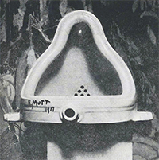

Style
Modernism

Impressionism, symbolism, art nouveau, fauvism, futurism and many more art styles are associated with a term "modernism". So what is it, really?
The terms modernism and modern art are generally used to describe the succession of art movements that critics and historians have identified since the realism of Gustav Courbet and culminating in abstract art and its developments in the 1960s. A fight against nineteenth-century academic and historicist traditions, believing that earlier aesthetic conventions were becoming outdated- modernism in a nutshell.


Although many different styles are encompassed by the term, there are certain underlying principles that define modernist art:
- A rejection of history and conservative values (such as realistic depiction of subjects)
- Innovation and experimentation with form (the shapes, colours and lines that make up the work) with a tendency to abstraction)
- An emphasis on materials, techniques and processes.